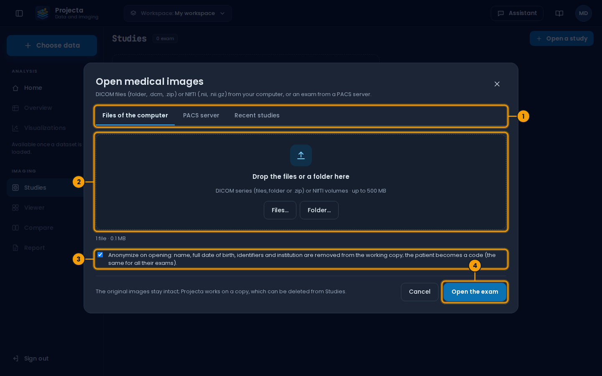
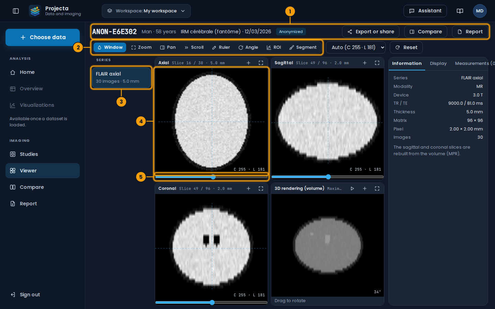
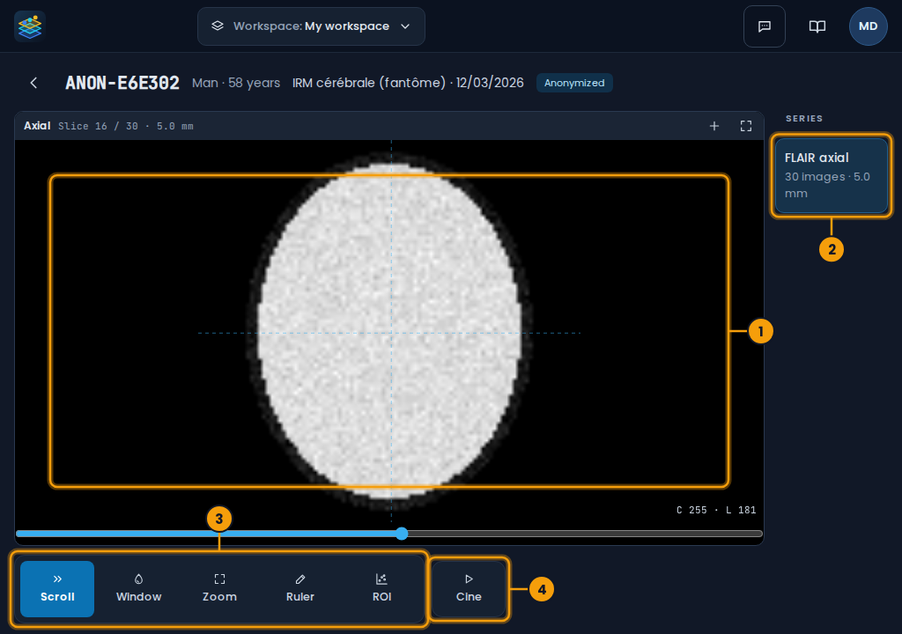
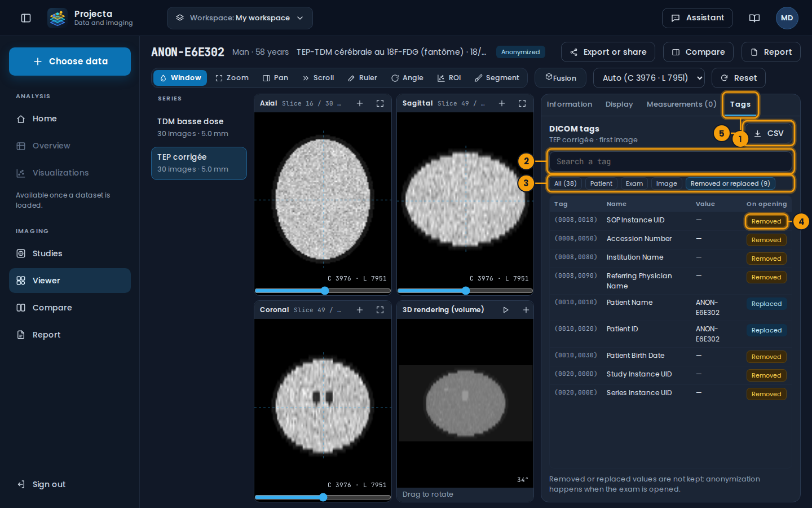
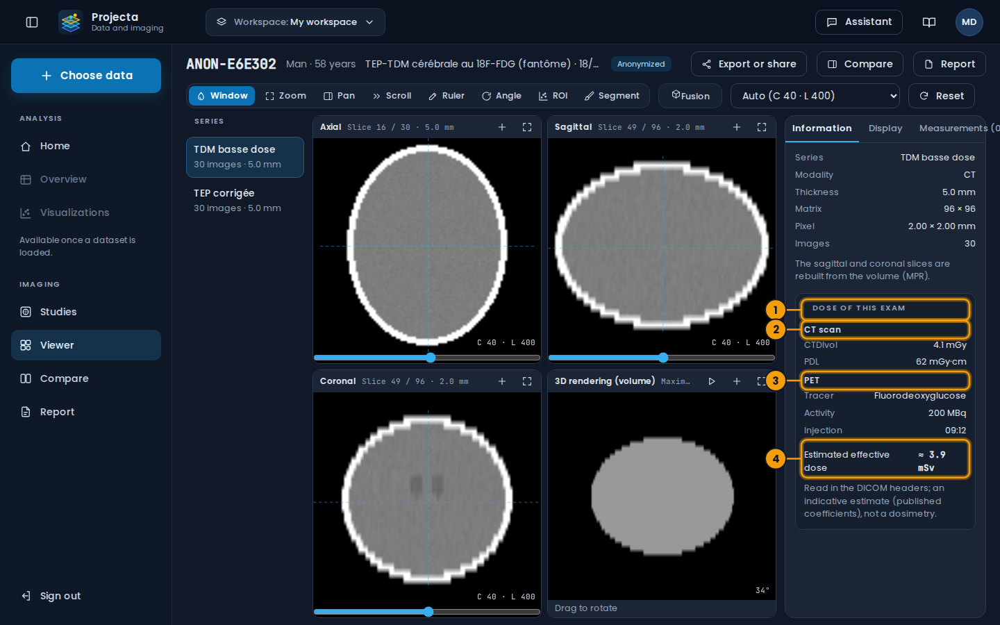
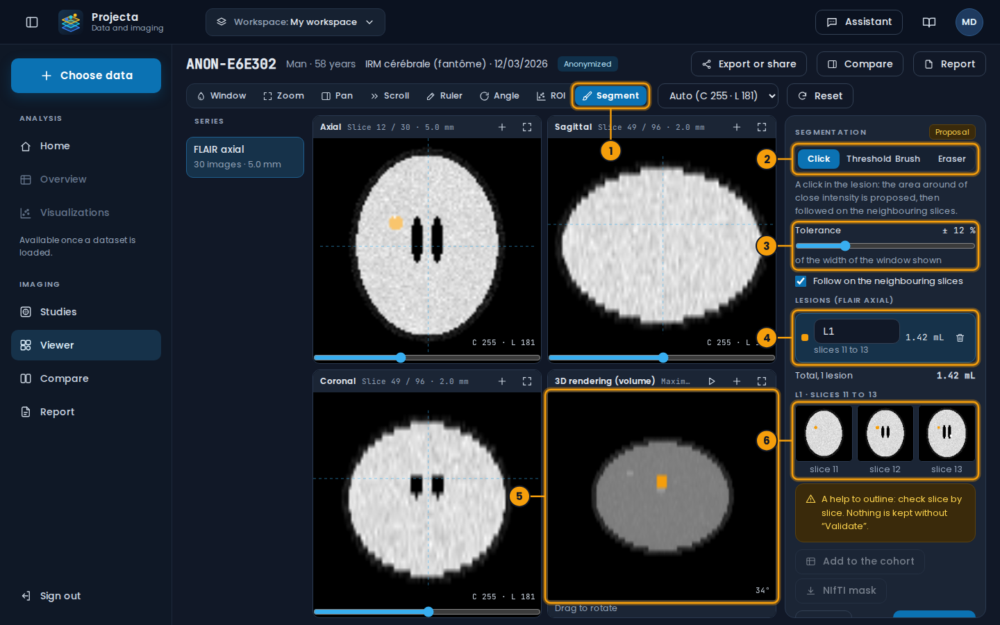
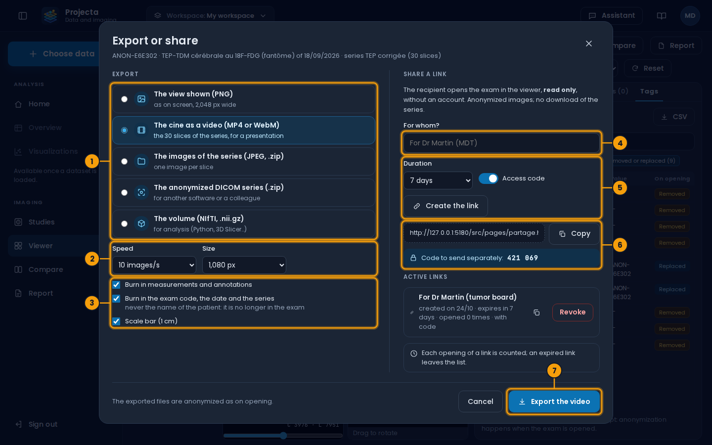
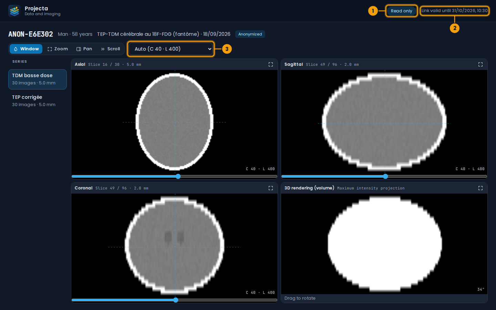

Medical imaging¶
The IMAGING part of the side menu opens DICOM or NIfTI exams (MRI, CT…), shows them in three planes and in 3D, measures the lesions, follows their course from one exam to the next and prepares a report.
A help, not a diagnosis
Projecta helps reading and measuring. The diagnosis and the report remain the physician’s, who validates them. Projecta is not a certified medical device.
Try without patient data¶
The administrator can provide two synthetic MRIs of a fictional patient, six months apart (one lesion grows, one is stable, one is new), and a brain FDG PET-CT of the same patient (for the dose and the tags): no real data, enough to try every screen.
Open a study¶

- Files of the computer, PACS server or Recent studies.
- Drop the files or a folder (DICOM, NIfTI,
.zip). - Anonymize on opening (ticked by default).
- Open the exam.
Imaging › Studies › Open a study, three tabs:
| Tab | Content |
|---|---|
| Files of the computer | DICOM files (with or without the .dcm extension), a whole folder, .zip files, or NIfTI volumes (.nii, .nii.gz); up to 500 MB together |
| PACS server | a PACS reachable through DICOMweb (Orthanc, dcm4chee…): search by patient, dates and modality, choose the exam, then its series |
| Recent studies | the exams already opened |
Anonymize on opening (ticked by default): the name, the full date of
birth, the identifiers and the institution are removed from the working
copy. The patient becomes a code (ANON-3F2A1C), the same for all
their exams, so that they can be compared without knowing who it is.
The code is computed with a secret of the server: without it, the
identifier cannot be found again.
The original images do not change: Projecta works on a copy, visible to the user who opened it only, and which can be deleted from Studies.
A PACS of the hospital network
A PACS of the internal network must be allowed by the administrator (as remote servers are). The password or token of the PACS is not saved; its address is, in the workspace.
Viewer¶

- The exam: its anonymized code, its date; Export or share, Compare, Report.
- The tools: window, zoom, ruler, angle, ROI, Segment…
- The series of the exam.
- The axial slice; the sagittal and coronal slices next to it, the 3D rendering below.
-
The slice slider.
-
Series on the left; in the centre, the axial, sagittal and coronal slices (rebuilt from the volume: MPR) and a 3D rendering (maximum intensity projection, to rotate by dragging).
- A click places the crosshair: the two other planes show the slices through that point. The wheel, the slider under each view or the arrow keys scroll the slices.
- Tools: Window (drag: horizontally the width, vertically the centre), Zoom, Pan, Scroll, Ruler (drag from one point to the other), Angle (three clicks), ROI.
- Preset windows: “Auto” (the exam’s; in PET, from zero to the most avid voxels), and for CT: brain, soft tissue, lung, bone.
- The + button of a view adds it to the key images of the report; the enlarge button shows it alone.
Projections and PET/CT fusion¶
The Display tab of the right panel sets how the planes are seen:
- Projection: Slice (one slice), MIP (the highest value over the thickness: PET foci, injected vessels), MinIP (the lowest: bronchi, emphysema) or Mean (smooths the noise), over a thickness of 5 to 100 mm or the whole volume.
- PET / CT fusion (also the Fusion button of the toolbar, for a study with a PET and a CT): the PET in colours over the CT, its opacity, its colours (hot, rainbow, grey) and its window. The two series of a study are lined up by their DICOM coordinates. The 3D view then shows the MIP of the PET in inverted grey; ▶ turns it.
- Under the crosshair: the value of the CT (HU) and the one of the PET, in SUV when the series gives its unit (Bq/mL), the patient's weight and the injected dose; with the SUVmax and SUVmean of a 1 cm sphere.
On a tablet¶
On a tablet (in landscape) or a narrow window, the viewer shows one large view, to read an exam again at the bedside or in a meeting: the same dashboard, in the browser, nothing to install.

- The large view (axial; the enlarge button shows the four views).
- The series, on the right.
- The tools, as 64 px buttons: Scroll, Window, Zoom, Ruler, ROI.
- Cine: the slices go by on their own; a second press stops them.
| Gesture | Effect |
|---|---|
| Drag one finger (Scroll) | the slices go by |
| Long press, then drag | the window (drag right: wider; up: brighter) |
| Two fingers | zoom (spread, pinch) and pan |
| Tap | the crosshair goes there |
With another tool chosen, the finger does what the tool does (window, zoom, ruler, ROI). The arrow top left goes back to the studies. Segmentation, export, sharing and the report stay on the computer.
15 minutes
On a tablet, the session closes after 15 minutes without touching the screen: a tablet is easily lent. Sign in again to go on.
DICOM tags and dose¶

- The Tags tab of the right panel, which widens.
- Search a tag: by number, name or value.
- The filters: All, Patient, Exam, Image, Removed or replaced.
- The On opening column: what anonymization did to the tag.
- CSV: the full list, to attach to a request or to compare.
The Tags tab lists every public tag of the first image of the series
(the private tags of manufacturers and the pixels are not kept). Those of
a sequence follow the sequence, marked ›. In English, the names of the
tags are those of the DICOM standard; their values are never translated.
| On opening | Meaning |
|---|---|
| Kept | the value of the file |
| Replaced | the name and the identifier of the patient, replaced by their code |
| Removed | an identity item (date of birth, institution, physicians, accession number, UIDs…): its value was not kept |
An exam opened without anonymization keeps all its values. Exams opened before this version only show the summary of the settings: open the files again to see every tag.

- Dose of this exam, at the bottom of the Information tab.
- The CT: CTDIvol and DLP.
- The PET: tracer, activity, time of injection.
- The estimated effective dose of the exam.
Dose of this exam (Information tab), when the headers give it:
- CT: the mean CTDIvol of the slices and the DLP (dose-length product: CTDIvol × length covered);
- PET or scintigraphy: the tracer, the injected activity (MBq) and the time of injection;
- estimated effective dose (mSv): DLP × a coefficient of the region examined (head 0.0021; neck 0.0059; chest 0.014; abdomen and pelvis 0.015), plus, for FDG, 0.019 mSv per MBq;
- Follow-up · this patient, 12 months: their exams of the twelve previous months opened in Projecta, and their total.
An estimate
The effective dose is an adult estimate from published coefficients, not a dosimetry of the patient. When an exam has several CT series (reconstructions), the one with the highest DLP is counted once. Other tracers than FDG have no estimate.
Measurements and analysis¶
An ROI is an ellipse drawn around a lesion. The view zooms on the part drawn to look at it closely (a click on the name of the ROI, in Measurements, goes back to it; Reset shows the whole image again). At the top of Measurements, the Regions gallery shows each region drawn on the series, with its volume; it grows with each new ROI, and a click on a thumbnail goes back to it. The API computes:
- on the slice: area, mean ± standard deviation, minimum and maximum;
- the lesion: the voxels brighter than half-way between the peak of the ellipse and the tissue at its edge (“half-maximum” outline), connected to the peak, on the slice and the neighbouring slices; its volume and the number of slices it covers;
- 18 radiomic features: shape (volume, surface, sphericity, elongation, largest diameter), intensity (mean, standard deviation, median, 10th and 90th percentiles, skewness, kurtosis, entropy, uniformity), texture (contrast, homogeneity, correlation and energy of the co-occurrence matrix).
The half-maximum outline suits lesions clearly brighter than the tissue around (FLAIR hyperintensities, contrast uptake). For a dark or poorly outlined lesion, check the volume.
The measurements are saved with the exam. Measurements as CSV downloads them.
Add to the cohort adds the lesion, one row per lesion, to a dataset
(imagerie/cohortes/<name>.csv of the datasets folder): patient code,
date of the exam, series, name of the lesion, sex, age and the 18
features. Once loaded, the cohort is projected like any dataset (PCA,
t-SNE, UMAP): lesions that look alike group together.
Segment the lesions¶
The Segment tool proposes the outline of the lesions, in 3D; you correct it, then validate it.

- The Segment tool: the right panel becomes the segmentation panel.
- The way to segment: Click, Threshold, Brush, Eraser.
- Its setting: the tolerance (Click), the threshold (Threshold) or the radius of the brush.
- The lesions: name, slices, volume (mL). A click chooses a lesion (its name can be changed); the bin removes it.
- The 3D rendering shows the lesions in colour.
- The slices of the chosen lesion: a click goes there.
| Way | What it does |
|---|---|
| Click | a click in the lesion: the connected voxels of close value (± the tolerance, a share of the width of the window shown) are proposed, on the slice or, with Follow on the neighbouring slices, in 3D |
| Threshold | the same, with the voxels above a value |
| Brush | dragging on a slice adds a disc to the chosen lesion (a new one if there is none) |
| Eraser | dragging removes from the chosen lesion (from all, without a chosen lesion) |
A proposal that would cover more than 5 % of the volume is refused: the tolerance spills over the tissue around; lower it, or raise the threshold.
Validate keeps the lesions with the exam, with their volume and the 18 radiomic features (as an ROI); Cancel goes back to the validated lesions. Once validated:
- Add to the cohort: one row per lesion in the cohort’s dataset (see Measurements and analysis);
- NIfTI mask: a
.nii.gzfile where each lesion has its number (1, 2, 3…), aligned with the export of the volume: for 3D Slicer, ITK-SNAP or Python.
A help to outline
The proposal follows the values of the image, not the anatomy: check each slice, correct with the brush and the eraser. Nothing is kept without Validate.
Compare two exams¶
Compare shows the same series of two exams of the same patient, side by side:
- Linked scrolling: both views scroll together;
- Automatic alignment: the slices are paired by the position of the head (the centre of the patient in each volume), which makes up for a patient placed higher or lower. It is not a full registration (rotation, deformation);
- Course of the lesions: the ROIs of the same name in both exams, with
their volume and the change (
+12 %,new,gone), and the chart of the volume of each lesion across all the exams.
To follow a lesion, give it the same name in each exam (“Lesion” field of the measurement).
Report¶
A draft is filled in: indication, technique (sequences, field), results (each lesion and its course compared with the previous exam), conclusion to write. The key images and the measurements are attached.
- Save the draft;
- Export to PDF: the print window of the browser, the report alone;
- Validate: a conclusion and a signature are needed; the report can no longer be changed, unless you Reopen the draft.
Sending to the PACS (DICOM SR) is planned for a next version.
Export or share¶
Export or share (top of the viewer):

- The format of the export.
- For the video: the speed and the size of the images.
- What is burnt into the images.
- For whom?: a name, to find your way among your links.
- The duration of the link, the access code, then Create the link.
- The link to copy, and the code to send separately (another message).
- The export button, depending on the format chosen.
| Export | Content |
|---|---|
| The view shown (PNG) | the enlarged view (otherwise the axial one), at the slice and with the window of the screen, 2,048 px wide |
| The cine as a video | every slice of that plane, at 5, 10 or 20 images per second; MP4, or WebM if the browser cannot write MP4 |
The images of the series (JPEG, .zip) |
one image per slice |
The anonymized DICOM series (.zip) |
DICOM images written anew, for another software or a colleague |
The volume (NIfTI, .nii.gz) |
for analysis (Python, 3D Slicer…) |
The exports carry what the exam kept at its opening: an anonymized exam stays anonymized (the patient code, never their name). The burnt-in items (measurements, exam code, date and series, 1 cm scale bar) are ticked for the images and the video.
Share a link: the person who gets it opens the exam in a read only viewer, without an account (window, zoom, pan, scroll; neither measurement nor download):

- Read only.
- The end date of the link.
-
The reading tools and the window.
-
Duration: 24 hours, 7 days or 30 days. An expired link no longer opens anything and leaves the list.
- Access code (advised): 6 digits, shown once, to send by another way than the link. After 10 wrong codes, the link is locked.
- Active links: for whom, end date, number of openings. Revoke cuts the link at once.
- Only an anonymized exam can be shared. Deleting the exam also cuts its links.
A link is a key
Whoever has the link (and its code) sees the exam until its end date. Prefer the access code, the shortest useful duration, and revoke a link that is no longer of use.
Formats read¶
| Format | Remarks |
|---|---|
| DICOM | one image per file (multi-frame files are not read yet), sorted by position; series grouped by SeriesInstanceUID, exams by StudyInstanceUID |
| NIfTI-1 | .nii or .nii.gz; a 4D volume shows its first volume |
The volumes are reoriented for radiological reading (the patient’s right on the left of the screen, the front at the top). Beyond 48 million voxels, the in-plane resolution is halved.